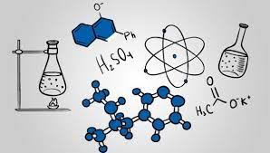
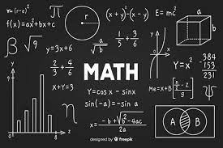
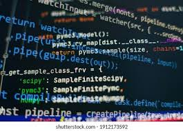

Chemistry is the branch of science that deals with the properties, composition,and structure of
elements and compounds,how they can change, and the energy that is released or absorbed when they change.

Few chemical formulas are:-
Mathematics is an area of knowledge that includes the topics of numbers, formulas and related structures,
shapes and the spaces in which they are contained, and quantities and their changes.

Some signs & symbols that are used in maths are :-
Coding tells a machine which actions to perform and how to complete tasks. Programming languages provide
the rules for building websites, apps, and other computer-based technologies. Each programming language helps humans accurately
communicate with machines.

Sample code in C language for addition of 2 numbers:
int main() {
int number1, number2, sum;
printf("Enter two integers: ");
scanf("%d %d", &number1, &number2);
sum = number1 + number2;
printf("%d + %d = %d", number1, number2, sum);
return 0;
}